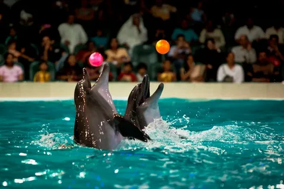
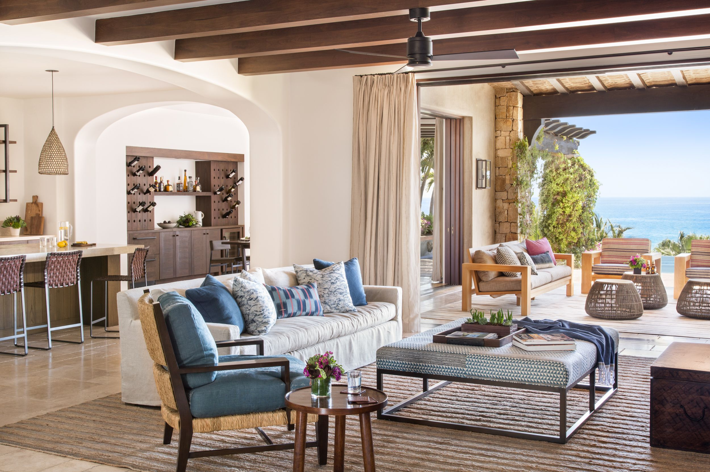

garden
A garden is a planned space, usually outdoors, set aside for the cultivation, display, and enjoyment of plants and other forms of nature. The single feature identifying even the wildest wild garden is control. The garden can incorporate both natural and artificial materials.

dolphine
Dolphins are highly intelligent marine mammals and are part of the family of toothed whales that includes orcas and pilot whales. They are found worldwide, mostly in shallow seas of the continental shelves, and are carnivores, mostly eating fish and squid.

home interior
A lovely ceiling medallion, beadboard added to a bathroom wall or a chair rail placed in a dining room are all effective design tools that can reinforce a particular style or transform a space.